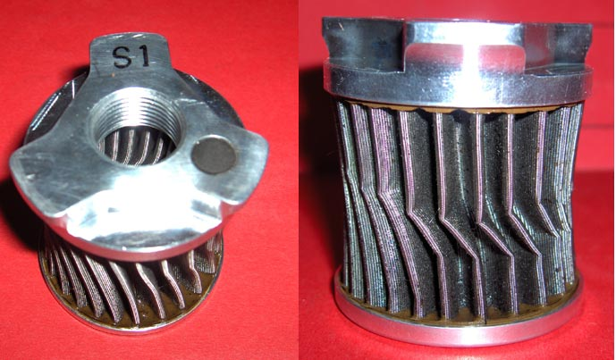
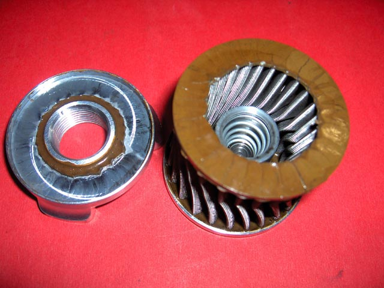

This filter is re-usable. You clean it, look at what came out of it, and put it back into service. It has twice the
filter area of paper filters, and is welded, not glued. The flow rate is higher, and works when the oil is cold.
It also has a magnet to remove iron particles before they reach the filter
I use one. It's purchase price is high, but that happens only once.
Did I mention, you can see what has been filtered out of your oil? Worth knowing!
The Model "S1" filter, that fits a Triumph Speed Triple 933, 1999-2006, (and many others) will also fit the Tornado 900. The retail price in 2007 was USD 119.00
1/4/9
The Scotts Performance re-usable oil filter might not be such a good idea after-all. I just removed it to clean
(6th time) to discover it's collapsed. On closer, microscopic inspection, it's full of debris. This, after
cleaning it in kero, and blowing it out as they recommend.
I sent them an email 24 hrs ago, but no response yet. We'll see .....


2/4/9
Just talked to Scotts.(no email yet)
Scotts reckon that the filter is clogged with clutch debris, and NO filter bypass will allow enough oil to bypass
in that situation - seems bullshit to me. In fact, it IS bullshit. I just talked to the engineering manager of
GUD Automotive, the co. that makes the Ryco brand, and he was adamant that the bypass valve should be able to take
the full flow without the filter crushing. Their product is designed & tested to do just that.
Scotts are looking into a suitable cleaning fluid that will dissolve this muck - would have been nice to get an
"heads up" on that development.
Scotts are also recommending ultrasonic cleaning - now.
Scotts are NOT going to send me a new filter free of charge ..... and I'm NOT going to spend $AUD 120 for something
that they clearly haven't got sorted.
I'm going back to using a Ryco Z436 disposable paper filter, and I'll be opening it up to check the collected
debris at every change.
4/4/9
Just got the report back from the oil test. No clutch material found, but loads of ferrous. I suspect from the cam
chain, as the tensioner is further in than it should be, after only 7,000 kms. This may have been the reason that
the DID chain didn't appear to perform very well. The chain hasn't been properly lubricated because of the filter
restriction.
I'm even more certain now, that the filter was gradually clogged up, over 30,000 km, with oil sludge - broken down
oil. Kero doesn't dissolve it, so it stayed where it lay.
If I had the slightest inkling that this could happen, I would have kept a (microscopic) eye on it.
I'm now totally pissed off with Scotts Performance, 'cos they obviously haven't got a way of cleaning it properly,
and won't stand by their product.
My advice to anyone who is running one? Check it with a microscope. It's the only way to be sure that it's clean.
If you were thinking of buying one - DON'T.